%matplotlib inline
import numpy as np # charge un package pour le numérique
import matplotlib.pyplot as plt # charge un package pour les graphiquesFormation Data-Science:
Introduction au Machine learning (Jour 1)
Auteurs : Joseph Salmon, Alexandre Gramfort
Ce notebook contient les éléments d’introduction au machine learning
I - Prétraitement et visualiation sur digits
Imports et intialisation
Description du jeu de données:
On charge le jeu de données digits disponoible dans le package scikit-learn (nom d’import sklearn). Ce jeu de données contient des images de chiffres numérisés. On va s’en servir au cours de cette séance pour étudier les principaux enjeu en classification (supervisée).
# Chargement des données disponible dans le package sklearn
from sklearn.datasets import load_digits
digits = load_digits()
X, y = digits.data, digits.target
print("Nombre de pixels : {}".format(X.shape[1]))
print("Nombre d'observations : {}".format(X.shape[0]))
print("Nombre de classes : {}".format(len(np.unique(y))))
# Choix d'une observation quelconques de la base
idx_to_test = 15
print("Affichage d'une ligne de la matrice / image:")
print(X[idx_to_test, :])
print("Affichage de la classe / chiffre associé:")
print(y[idx_to_test])Nombre de pixels : 64
Nombre d'observations : 1797
Nombre de classes : 10
Affichage d'une ligne de la matrice / image:
[ 0. 5. 12. 13. 16. 16. 2. 0. 0. 11. 16. 15. 8. 4. 0.
0. 0. 8. 14. 11. 1. 0. 0. 0. 0. 8. 16. 16. 14. 0.
0. 0. 0. 1. 6. 6. 16. 0. 0. 0. 0. 0. 0. 5. 16.
3. 0. 0. 0. 1. 5. 15. 13. 0. 0. 0. 0. 4. 15. 16.
2. 0. 0. 0.]
Affichage de la classe / chiffre associé:
5EXERCICE:
Faites varier le choix de l’indice. Sans afficher la classe arrivez-vous à reconnaitre le chiffre représenté?
np.sum(y == 1)182Visualisation des observations:
Les images scannées sont de taille 8 x 8 et comportent donc 64 pixels chacune. Elles sont stockées sous la forme de vecteurs ligne, qu’il faut remettre dans un ordre lisible pour les identifiés. L’affichage graphique est proposé avec les commandes qui suivent.
# Utilisation de la fonction imshow pour l'affichage de l'image numéro idx_to_test:
imgplot = plt.imshow(np.reshape(X[idx_to_test, :], (8, 8)))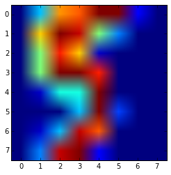
# Amélioration de la visualisation (niveau de gris) et de la légende:
imgplot = plt.imshow(np.reshape(X[idx_to_test, :], (8, 8)),
cmap='gray', aspect='equal', interpolation='nearest')
# Attention aux accents: ne pas oublier le u (Unicode) ci-dessous
plt.title(u'Le chiffre numéro %s est un %s' % (idx_to_test, y[idx_to_test]))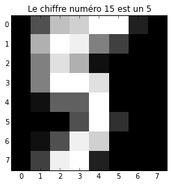
plt.imshow?Statistiques élementaires :
Pour mieux comprendre la base de données on va s’intéresser à quelques statistiques. On commence par calculer les moyennes et variances par classes pour chacun des chiffres. La moyenne par classe se visualise comme une image qui est une représentantion moyenne pour chaque chiffre de zéro à neuf. Idem pour la variance, ce qui permet alors de voir les parties avec les plus grandes variations entre les membres d’une même classe.
# Récupérer les modalités possible prises (Il y en a bien 10!)
classes_list = np.unique(y).astype(int)
print "Liste des classes en présence: ", classes_listListe des classes en présence: [0 1 2 3 4 5 6 7 8 9]EXERCICE:
- Calculer un représentant moyen du chiffre 0?
- Avec une boucle
forcalculer le représentant moyen pour chaque chiffre
Solution
np.mean(X[y == 0, :], axis=0).shape(64,)imgplot = plt.imshow(np.reshape(np.mean(X[y == 0, :], axis=0), (8, 8)),
cmap='gray', aspect='equal', interpolation='nearest')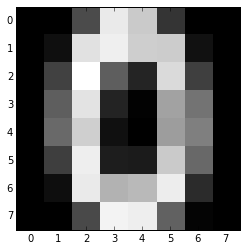
# Calculer un représentant moyen pour chaque chiffre
Xi_mean = [np.mean(X[y == cls], axis=0) for cls in classes_list]
# Fonction d'affichage d'une liste d'image
def disp_pics(pic_list, title=''):
"""" Fonction qui affiche une liste d'image codée en vecteur """""
fig, axs = plt.subplots(nrows=2, ncols=5, figsize=(12, 4))
plt.suptitle(title, fontsize=16)
for i in range(10):
opt = dict(cmap='gray', aspect='equal', interpolation='nearest')
axs.flat[i].imshow(pic_list[i].reshape(8, 8), **opt)
axs.flat[i].set_title("Chiffre: %s" % i)
# Contre-balancer l'affichage pas terrible de matplotlib
plt.tight_layout()
plt.subplots_adjust(top=0.85)
# Affichage des images moyennes par classe pour les données
disp_pics(Xi_mean, title=(u"Moyennes sur l'ensemble des données"))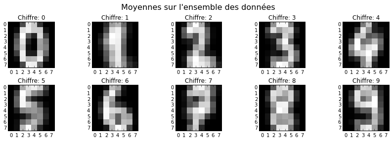
plt.matshow(np.cov(X[y == 0].T))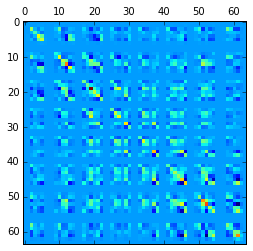
# Calculer de la variance par chiffre
Xi_var = [np.var(X[y == cls], axis=0) for cls in classes_list]
# Affichage des images de variance par classe pour les données
disp_pics(Xi_var, title=(u"Variances sur l'ensemble des donneés"))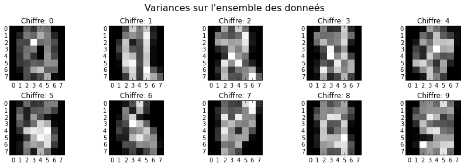
II - Premiers classifieurs
Validation : découpage Apprentissage / Validation
On procède de manière classique en réservant 80% des données pour la partie apprentissage, et 20% pour l’évaluation des classifieurs que l’on a construit sur la première partie. En effet il n’est pas raisonnable de tester la perfromance sur 100% des données. Cela donnera lieux à du sur-apprentissage (en: overfitting). La généralisation des méthodes apprises serait alors très mauvaise
from sklearn.cross_validation import train_test_split
X_train, X_test, y_train, y_test = train_test_split(X, y, train_size=0.8,
random_state=42)
print("Nb d'échantillons d'apprentissage : {}".format(X_train.shape[0]))
print("Nb d'échantillons de validation : {}".format(X_test.shape[0]))Nb d'échantillons d'apprentissage : 1437
Nb d'échantillons de validation : 360plt.hist(y_train, bins=10)
plt.hist(y_test, bins=10)(array([ 33., 28., 33., 34., 46., 47., 35., 34., 30., 40.]),
array([ 0. , 0.9, 1.8, 2.7, 3.6, 4.5, 5.4, 6.3, 7.2, 8.1, 9. ]),
<a list of 10 Patch objects>)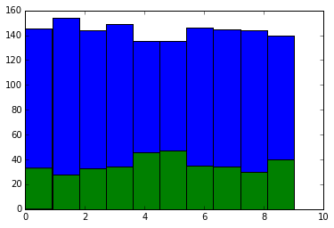
Mesures de performance
from sklearn.lda import LDA
clf = LDA() # choix de la méthode LDA comme premier classifieur
clf.fit(X_train, y_train) # calibration de la méthode sur nos données
y_pred = clf.predict(X_test) # prédiction de la méthode sur la partie à tester
# Chargement d'une mesure standard de performance
from sklearn.metrics import accuracy_score
# accuracy : pourcentage de bonnes predictions
print "Accuracy : ", accuracy_score(y_test, y_pred)
print "Accuracy bis: : ", np.mean(y_test == y_pred) # mesure d'erreur 0/1
print("Le classifieur propose une bonne prédiction dans %s %% des cas."
% (100 * accuracy_score(y_test, y_pred))) Accuracy : 0.944444444444
Accuracy bis: : 0.944444444444
Le classifieur propose une bonne prédiction dans 94.4444444444 % des cas./Users/alex/work/src/scikit-learn/sklearn/lda.py:374: UserWarning: Variables are collinear.
warnings.warn("Variables are collinear.")EXERCICE:
- Construire un classifieur “naif” qui prédirait chaque chiffre entre 0 et 9 avec probabilité 0.1 (on pourra utiliser la commande np.random.randint). Mesurer sa performance sur l’échantillon test.
Correction:
y_rand = np.random.randint(10, size=y_test.shape)
accuracy_score(y_rand, y_pred)0.083333333333333329Précision et rappel
# Choix d'un chiffre:
chf = 8
print "Chiffre choisi: %s " % chf Chiffre choisi: 8 # Chargement de deux autres mesure de performance
from sklearn.metrics import precision_score, recall_score# Calcul de la précision:
precision_value = precision_score(y_test, y_pred,average=None)
print "Precision : ", precision_value[chf]
print "Precision bis : ", np.sum(np.logical_and(y_pred == chf, y_test == chf)) / float(np.sum(y_test == chf))
print("Le classifieur prédit le chiffre %s "
" avec raison dans %s %% de ses prédictions.\n"
"Autrement dit, dans %s %% de ses prédictions le classifieur prédit %s"
" alors que le vrai chiffre est différent.\n" %
(chf, 100 * precision_value[chf], 100 * (1 - precision_value[chf]), chf))Precision : 0.928571428571
Precision bis : 0.866666666667
Le classifieur prédit le chiffre 8 avec raison dans 92.8571428571 % de ses prédictions.
Autrement dit, dans 7.14285714286 % de ses prédictions le classifieur prédit 8 alors que le vrai chiffre est différent.
recall_score??# Calcul du rappel:
recall_value = recall_score(y_test, y_pred, average=None) # en Anglais rappel = recall
print "Rappel : ", recall_value[chf]
print "Rappel bis : ", np.mean(np.logical_and(y_pred == chf, y_test == chf))
print("Le classifieur prédit le chiffre %s avec raison dans %s"
"%% des cas où le vrai chiffre est un %s.\n"
"En revanche %s %% des chiffres qui sont vraiment des %s"
" sont prédit à tord par un autre chiffre." %
(chf, 100 * recall_value[chf], chf, 100 * (1 - recall_value[chf]), chf))Rappel : 0.974358974359
Rappel bis : 0.105555555556
Le classifieur prédit le chiffre 8 avec raison dans 97.4358974359% des cas où le vrai chiffre est un 8.
En revanche 2.5641025641 % des chiffres qui sont vraiment des 8 sont prédit à tord par un autre chiffre.EXERCICE:
Afficher la précision et le rappel pour tous les valeurs de chiffre de 0 à 9 en utilisant une boucle “for” pour le classifieur que l’on vient de considérer.
Résumé de ces éléments avec scikit-learn:
from sklearn.metrics import classification_report, f1_score
print classification_report(y_test, y_pred) precision recall f1-score support
0 0.96 1.00 0.98 27
1 0.94 0.91 0.93 35
2 1.00 0.92 0.96 36
3 0.90 0.97 0.93 29
4 0.97 0.97 0.97 30
5 1.00 0.93 0.96 40
6 1.00 0.98 0.99 44
7 0.93 1.00 0.96 39
8 0.90 0.97 0.94 39
9 0.90 0.88 0.89 41
avg / total 0.95 0.95 0.95 360
EXERCICE:
Vérifier que la précision et le rappel moyen donnés dans le dernier tableau sont la moyenne de la précision et du rappel obtenus pour chaque chiffre.
III - Courbe d’apprentissage
Les courbes d’apprentissage permettent de quantifier le gain de performance obtenu en augmentant la taille des données. Cela permet de répondre à des questions comme:
- Ai-je assez de données?
- Mon modèle est-il assez complexe pour mon problème?
N_range = np.linspace(15, X_train.shape[0], 20).astype(int)
clf = LDA()
clf_name = 'LDA'# choix de la méthode LDA comme premier classifieur
def plot_learning_curve(clf, clf_name):
training_error = []
test_error = []
for N in N_range:
XN = X_train[:N]
yN = y_train[:N]
clf.fit(XN, yN)
training_error.append(accuracy_score(clf.predict(XN), yN))
test_error.append(accuracy_score(clf.predict(X_test), y_test))
plt.figure()
plt.plot(N_range, training_error, label='training')
plt.plot(N_range, test_error, label='test')
plt.legend(loc='center left', bbox_to_anchor=(1, 0.5))
plt.title(u'Courbe d\'apprentissage pour la méthode ' + clf_name)
plt.xlabel('Nombre de points d\'entrainement')
plt.ylabel('Pourcentage d\'erreurs')
#plot_learning_curve(clf, clf_name)
from sklearn.neighbors import KNeighborsClassifier
clf = KNeighborsClassifier(n_neighbors=15)
plot_learning_curve(clf, 'knn') 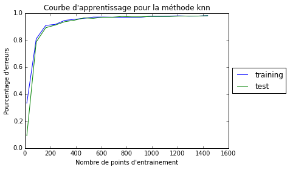
scores = []
neighbors_range = range(1, 30, 1)
for n_neighbors in neighbors_range:
clf.n_neighbors = n_neighbors
clf.fit(X_train, y_train)
scores.append(accuracy_score(clf.predict(X_test), y_test))
plt.plot(neighbors_range, scores)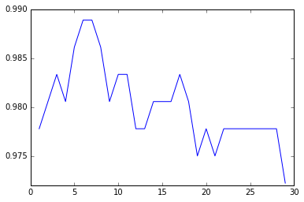
y_test.shape(360,)IV - Comparaison de performances de classifieurs
# Chargement d'une autre méthode de classification (KNN)
from sklearn.neighbors import KNeighborsClassifier
# Liste des classifieurs évalués
classifiers = [('LDA', LDA()),
('KNN_k=1', KNeighborsClassifier(n_neighbors=1))]Calcul des métriques de performance
Pour chaque classifieur on évalue la performance par le score sur les données de test et le temps d’éxecution
from sklearn.metrics import confusion_matrix
from sklearn.grid_search import GridSearchCVimport pandas as pd # charge un package pour le traitement des données
from timeit import timeit # charge un package pour des mesures de temps
# Definition des métriques de performance
def perf_compute(clf, name, loops=10):
"""
Calcule le temps d'apprentissage, de prediction, le score
et la matrice de confusion d'un classifieur
"""
# On initialise le conteneur
perf = pd.Series(name=name)
# On crée les callables qu'on passera à la fonction de profiling
fit = lambda: clf.fit(X_train, y_train)
score = lambda: clf.score(X_test, y_test)
# On profile le temps des phases d'entrainement et de prédiction en ms
perf['train_tps'] = timeit(fit, number=loops) / loops * 1000
perf['test_tps'] = timeit(score, number=loops) / loops * 1000
perf['total_tps'] = perf.train_tps + perf.test_tps
# On calcule le score en pourcentage
perf['score'] = fit().score(X_test, y_test) * 100
# On calcule la matrice de confusion
perf['conf_mat'] = [confusion_matrix(fit().predict(X_test), y_test)]
# Normalisation par ligne de la matrice de confusion pour avoir des pourcentages d'erreurs.
# cm_normalized = cm.astype('float') / cm.sum(axis=1)[:, np.newaxis]
return perf# On lance le calcule de performance. On profile en bouclant 100 fois
perfs = pd.DataFrame([perf_compute(clf, name) for name, clf in classifiers])
perfs = perfs.sort('score')
perfs['train_tps test_tps total_tps score'.split()].T| LDA | KNN_k=1 | |
|---|---|---|
| train_tps | 8.186007 | 2.347398 |
| test_tps | 0.289893 | 51.403213 |
| total_tps | 8.475900 | 53.750610 |
| score | 94.444444 | 97.777778 |
# Barplot des performances
plt.style.use('ggplot') # sortie graphique améliorées (tester sans!)
fig, axs = plt.subplots(ncols=2, figsize=(12, 4))
perfs['score'].plot(kind='barh',
title='Pourcentage d\'erreurs commises (en %)',
ax=axs[0])
perfs[['train_tps', 'test_tps', 'total_tps']].plot(kind='barh',
title='Temps (en ms)',
ax=axs[1])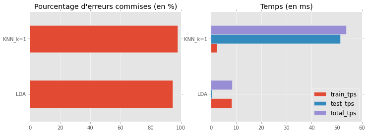
import seaborn as sns
def plot_conf_mat(perf, ax, title='Model'):
"""
Affichage de la matrice de confusion
"""
sns.heatmap(perf.conf_mat[0], ax=ax, square=True, annot=True)
ax.set_title('{}: {}\nScore: {:.2f}'.format(title, perf.name, perf.score))
ax.set_xlabel('True label')
ax.set_ylabel('Predicted label')
# Affichage du plus mauvais et du meilleur classifieur
# Les classifieurs sont classés par scores croissant
fig, axs = plt.subplots(ncols=2, figsize=(12, 4))
plot_conf_mat(perfs.iloc[0], ax=axs[0], title='Pire model')
plot_conf_mat(perfs.iloc[-1], ax=axs[1], title='Meilleur model')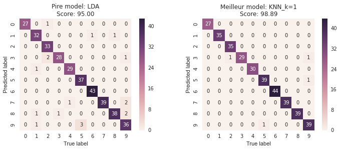
# courbe d'apprentissage pour KNN
plot_learning_curve(classifiers[1][1], classifiers[1][0])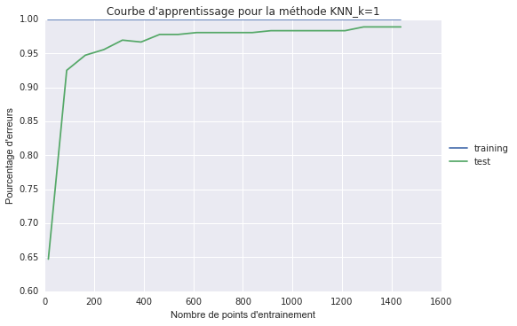
EXERCICE
- Tester d’autres modèles:
from sklearn.naive_bayes import GaussianNB
from sklearn.svm import SVC
estimator = GaussianNB()
estimator = SVC(gamma=0.001)
Les résultats varient en fonction du découpage apprentissage/validation initial. Obtenez-vous des les même résultat :
en changeant la graine de l’aléa (‘random_state=10’)?
en changeant le ratio apprentissage/validation?
EXERCICE
Quelle valeur de k dans le k-NN donne la meilleure performance? Faire varier k entre 1 et 10 et afficher un graphique de performance en fonction de k.
Il y a-t-il un compromis entre la performance de prédiction et le temps de calcul?
from sklearn.datasets import load_boston
boston = load_boston()
X, y = boston.data, boston.targetprint(boston.DESCR)Boston House Prices dataset
Notes
------
Data Set Characteristics:
:Number of Instances: 506
:Number of Attributes: 13 numeric/categorical predictive
:Median Value (attribute 14) is usually the target
:Attribute Information (in order):
- CRIM per capita crime rate by town
- ZN proportion of residential land zoned for lots over 25,000 sq.ft.
- INDUS proportion of non-retail business acres per town
- CHAS Charles River dummy variable (= 1 if tract bounds river; 0 otherwise)
- NOX nitric oxides concentration (parts per 10 million)
- RM average number of rooms per dwelling
- AGE proportion of owner-occupied units built prior to 1940
- DIS weighted distances to five Boston employment centres
- RAD index of accessibility to radial highways
- TAX full-value property-tax rate per $10,000
- PTRATIO pupil-teacher ratio by town
- B 1000(Bk - 0.63)^2 where Bk is the proportion of blacks by town
- LSTAT % lower status of the population
- MEDV Median value of owner-occupied homes in $1000's
:Missing Attribute Values: None
:Creator: Harrison, D. and Rubinfeld, D.L.
This is a copy of UCI ML housing dataset.
http://archive.ics.uci.edu/ml/datasets/Housing
This dataset was taken from the StatLib library which is maintained at Carnegie Mellon University.
The Boston house-price data of Harrison, D. and Rubinfeld, D.L. 'Hedonic
prices and the demand for clean air', J. Environ. Economics & Management,
vol.5, 81-102, 1978. Used in Belsley, Kuh & Welsch, 'Regression diagnostics
...', Wiley, 1980. N.B. Various transformations are used in the table on
pages 244-261 of the latter.
The Boston house-price data has been used in many machine learning papers that address regression
problems.
**References**
- Belsley, Kuh & Welsch, 'Regression diagnostics: Identifying Influential Data and Sources of Collinearity', Wiley, 1980. 244-261.
- Quinlan,R. (1993). Combining Instance-Based and Model-Based Learning. In Proceedings on the Tenth International Conference of Machine Learning, 236-243, University of Massachusetts, Amherst. Morgan Kaufmann.
- many more! (see http://archive.ics.uci.edu/ml/datasets/Housing)
plt.hist(y)(array([ 21., 55., 82., 154., 84., 41., 30., 8., 10., 21.]),
array([ 5. , 9.5, 14. , 18.5, 23. , 27.5, 32. , 36.5, 41. ,
45.5, 50. ]),
<a list of 10 Patch objects>)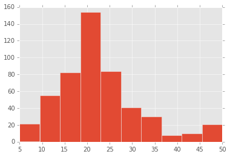
AdaBoostRegressor?from sklearn.cross_validation import cross_val_score
from sklearn.neighbors import KNeighborsRegressor
from sklearn.preprocessing import scale
from sklearn.ensemble import RandomForestRegressor
from sklearn.ensemble import GradientBoostingRegressor
from sklearn.ensemble import AdaBoostRegressor
# XX = scale(X)
# estimator = KNeighborsRegressor(n_neighbors=1)
estimator = RandomForestRegressor(n_estimators=100, max_depth=7, n_jobs=4)
# estimator = GradientBoostingRegressor()
# estimator = AdaBoostRegressor(base_estimator=estimator)
scores = cross_val_score(estimator, X, y, cv=5, scoring='mean_squared_error')
print np.sqrt(-np.mean(scores))4.70427200106np.std(X, axis=0)array([ 8.58828355e+00, 2.32993957e+01, 6.85357058e+00,
2.53742935e-01, 1.15763115e-01, 7.01922514e-01,
2.81210326e+01, 2.10362836e+00, 8.69865112e+00,
1.68370495e+02, 2.16280519e+00, 9.12046075e+01,
7.13400164e+00])